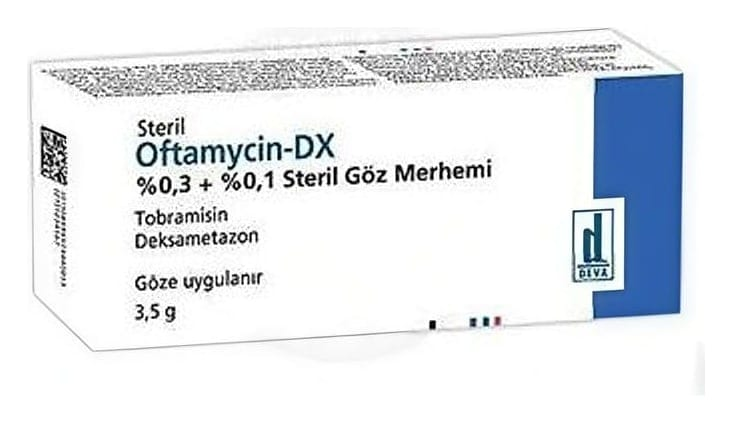

Oftamycin-Dx %0.3 + %0.1 Göz Merhemi, 3.5 g, 1 Tüp

Ne için kullanılır
KT · Bölüm 1OFTAMYCİN-DX kutusunda, içinde beyaz-beyazımsı homojen göz merhemi bulunan 1 adet 3,5 gramlık tüp vardır.
OFTAMYCİN-DX, kortikosteroidler grubuna ait olan anti-enflamatuvar (yangı önleyici) etkiye sahip deksametazon ve göz enfeksiyonlarına neden olan çeşitli bakterilere karşı etkili aminoglikozid antibiyotikler grubuna dahil olan tobramisin olmak üzere iki ilacın birleşimini içermektedir.
OFTAMYCİN-DX; yetişkinlerde, iki yaş ve üzerindeki çocuklarda, kortikosteroid gerektiren ve oküler enfeksiyonun ya da oküler enfeksiyon riskinin bulunduğu durumlarda göz iltihabının tedavisinde kullanılır.